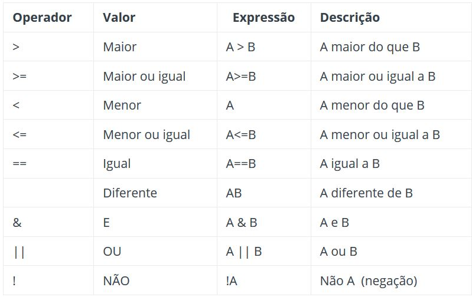

Para entender programação é preciso primeiro entender a forma como os dados que irão ser manipulados pelo programa são vistos pelo computador. Tudo aquilo que irá ser utilizado pelo computador é armazenado na sua memória RAM. Para permitir aos programadores escreverem seus programas de uma forma mais simplificada e manipular mais fácilmente essa o que está armazenado nessa memória surgiu o que é conhecido como variaveis. As variaveis são "rótulos" que colocamos para indentificar melhor o conteúdo que está contido dentro delas. Entretanto, certos tipos de dados possuem algumas características bem diferentes de outros e trata-los da mesma maneira seria bem problemático (não podemos somar o numeral 1 a uma letra e esperar obter um resultado válido por exemplo). Assim, surgiram os tipos de variaveis. Os tipos de variáveis servem para especificar qual é o tipo de certa variavel, e com isso quais operações são possíveis de se fazer com essa variavel. São eles: booleano (boolean), inteiro(integer), ponto flutuante(float), caractere(character), vetor(array), e cadeia de caracteres(string). Vamos ver agora o que significa cada um deles.
Boolean
O Boolean é o tipo mais simples de todas as variaveis, ele apenas armazena um valor, que pode ser tanto true (verdadeiro) quanto false (falso). Ele é muito utilizado para checar condições (que iremos ver mais para frente).
Integer
O Integer representa o conjunto dos números inteiros. Ele é utilizado para armazenar numeros sem parte fracionária. Com eles é possível somar, subtrair, multiplicar ou dividir (contanto que o resultado seja também um inteiro) outros inteiros.
Float
Um float armazena números com parte fracionária (3,14 por exemplo). Ele equivale ao conjunto dos racionais. É possivel converter um integer em um float sem nenhum problema, entretanto é preciso tomar cuidado, pois ao se converter um float em um int toda a sua será desprezada e o número arredondado ao inteiro mais próximo.
Character
O character, também conhecido como caractere, armazena apenas uma letra, que pode ser tanto em caixa alta quanto baixa.
Array
O array, ou vetor como é conhecido em português, é um tipo de variavel bem diferente das anteriores. Ele é, de modo bem simplificado, um "conjunto" de um outro tipo de variavel que pode ser tanto integer, float ou char. O array têm a característica de ter tamanho fixo, ou seja não pode aumentar de tamanho depois de criado. Uma das maiores vantagens do array é a possibilidade de se acessar e modificar qualquer valor dentro dele de forma bem simples: basta apenas que se conheça a posição que o elemento desejado ocupa no array. Não é possível fazer operações com o array propriamente dito, apenas com os elementos que estão contidos dentro dele.
String
O String é um caso especial de array. Ele armazena conjuntos de caracteres e espaços em branco. Por exemplo, essa frase que você está lendo poderia ser uma string, e seria exatamente do mesmo jeito que você está lendo. Na maioria das linguagens de programaçao o string possui tamanho fixo, igual ao array, mas em outras ela o tamanho dela possa ser modificado posteriormente. Ao contrário do array, é possível fazer operações com string, como por exemplo concatenar duas strings ("aba" e "cate" concatenadas formam "abacate").
Operações Básicas com Variaveis
Embora você já tenha uma noção de quais operações são possíveis com determinados tipos de variaveis, existem alguns detalhes importantes que ainda precisam ser discutidos.
Operações Lógicas
São aquelas que executam ações lógicas dentro do programa. Têm como
Atribuição
A atribuição é a operação utilizada para armazenar um valor, seja ele um número ou uma letra, em uma variável. Ela é representada pelo sinal de igual (=). O que estiver do lado esquerdo do igual irá receber aquilo que estiver no lado direito do igual.
Comparação
A comparação é peça fundamental para as estruturas condicionais. Ela pode ocorrer de diversas formas, a mais comum é uma comparação para checar se dois valores são iguais entre si e nesse caso é indicada por dois sinais de iguais juntos (==). Também existem outros tipos de comparação: comparação para checar se um valor é menor que outro (<), se ele é maior (>), menor ou igual (<=), maior ou igual (>=). Em uma comparação também é possível usar operadores lógicos como E(&&), OU(||), NÂO(!) e diferente(!=). Caso se sinta confuso, sinta-se livre para conferir a tabela abaixo
Operações Matemáticas
As operações matemáticas são aquelas mesma que você já viu durante seu ensino fundamental e funcionam exatamente da mesma maneira na qual você está acostumado a utizar elas na matemática (única ressalva para a divisão, que será abordada mais a frente).
Soma e Subtração
A soma e a subtração, assim como havia dito anteriormente funcionam exatamente do mesmo modo. O número à esquerda é somado, ou subtraido, do número à direita. Os números podem ser tanto negativos quanto positivos.
Multiplicação e Divisão
A multiplicação também funciona bem similar: os números que estiver antes e depois do sinal (*) serão multiplicados. Entretanto, pode haver uma complicação. Ao se multiplicar um número por um valor entre que possua parte fracionária pode ser que o resultado também possua parte fracionária, o que possa causar erro no programa, caso a variável que guarda o valor do resultado seja um inteiro. Mesma coisa com a divisão, deve-se prestar bastante atenção para que o programa não se comporte de maneira indevida devido a esses problemas.
Agora que você já tem uma ideia do que são os tipo de variáveis e como elas funcionam é hora de testar seus conhecimentos no teste abaixo.